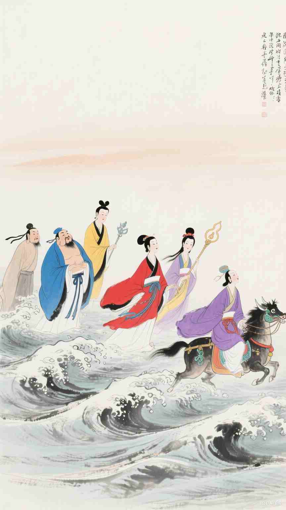

道教主要神像
道教是中国传统宗教之一，拥有丰富的神谱体系。以下是道教中几位重要的神祇介绍。
三清
三清是道教的最高神，分别是元始天尊、灵宝天尊和道德天尊（太上老君）。他们象征着宇宙万物的本源和创造力量。

四御
四御是辅佐三清的四位天帝，分别是玉皇大帝、紫微大帝、勾陈大帝和后土皇地祇，他们掌管着天地万物的运行。

八仙
八仙是道教中广为流传的八位神仙，包括铁拐李、汉钟离、张果老、吕洞宾、何仙姑、蓝采和、韩湘子和曹国舅。